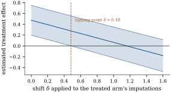

41.6 Sensitivity analysis
Everything in the last three sections rested on missingness at random, and Proposition 41.1.1 says the data cannot check it. That is a reason neither to despair nor to pretend, but to report how much the conclusion depends on the assumption — which is what a sensitivity analysis does.
41.6.1. Two factorizations
The selection factorization Eq. 41.1.1 splits the joint law into a model for the data and a model for who responds. The other order gives the pattern-mixture factorization
a mixture, over patterns, of a different distribution of the data within each pattern. The two describe the same object and differ only in what is easy to say.
Consider a single variable
(a) Every selection model
(b) The observed data identify
is therefore identified only after the analyst supplies the last factor. Missing at random is the supply
(c) Let the mechanism be
Proof.
(a) Both expressions are the joint density
(b) The observed data consist of
(c) Fix
Take that as the definition and assemble
It remains to solve
Part (c) is worth dwelling on. Fit a Heckman-style selection model — a normal outcome equation and a probit selection equation, as in Heckman (1979) — and the software returns an estimate of the selection coefficient with a standard error; part (c) says that number is an artefact of the assumed functional forms. With an exclusion restriction, a variable entering the selection equation and not the outcome equation, the parameter becomes identified by more than functional form; without one it does not. Reporting such a fit as though the data had spoken is the central dishonesty of MNAR modelling, and the reason this section prefers to display the untestable part rather than estimate it.
Idea. Under MNAR nothing is estimated that was not assumed. The useful question is not “what is the answer?” but “how far must the assumption move before the answer changes?”
41.6.2. Delta-adjustment and tipping points
The pattern-mixture form suggests an honest device.
Impute under MAR, then shift the imputed values by a
fixed amount
Here
A two-arm study of
Now suppose the treated units who dropped out would
have done worse than the MAR imputation says, by

import numpy as np
from scipy import stats
rng = np.random.default_rng(4108)
n, tau_true = 400, 0.6
arm = np.repeat([0, 1], n // 2) # 0 = control, 1 = treated
base = rng.normal(size=n) # a baseline measurement, never missing
y = 0.5 + tau_true * arm + 0.6 * base + rng.normal(size=n)
eta = -1.0 + 0.7 * arm + 0.8 * base # dropout: depends on arm and baseline
seen = rng.uniform(size=n) > 1 / (1 + np.exp(-eta))
print(f"{n - seen.sum()} of {n} outcomes lost:"
f" {int((~seen & (arm == 1)).sum())} treated, {int((~seen & (arm == 0)).sum())} control")Z = np.column_stack([np.ones(n), arm, base])
def mi_estimate(delta, M, rng):
"""Multiple imputation under MAR, then shift the treated arm's imputations by -delta."""
Zo, k = Z[seen], int(seen.sum())
g, *_ = np.linalg.lstsq(Zo, y[seen], rcond=None)
sse = float(np.sum((y[seen] - Zo @ g) ** 2))
qs, us = [], []
for _ in range(M):
s2 = sse / rng.chisquare(k - Z.shape[1])
g_star = rng.multivariate_normal(g, s2 * np.linalg.inv(Zo.T @ Zo))
draw = Z @ g_star + np.sqrt(s2) * rng.normal(size=n) - delta * arm
y_full = np.where(seen, y, draw)
b, *_ = np.linalg.lstsq(Z, y_full, rcond=None)
resid = y_full - Z @ b
v = (resid @ resid / (n - 3)) * np.linalg.inv(Z.T @ Z)[1, 1]
qs.append(b[1])
us.append(v)
M_ = len(qs)
q_bar, u_bar, b_var = np.mean(qs), np.mean(us), np.var(qs, ddof=1)
total = u_bar + (1 + 1 / M_) * b_var
gamma = (1 + 1 / M_) * b_var / total
return q_bar, total, (M_ - 1) / gamma**2
deltas = np.linspace(0.0, 1.6, 33)
est, lo, hi = [], [], []
for d in deltas:
q, t, nu = mi_estimate(d, 50, np.random.default_rng(4109))
half = stats.t.ppf(0.975, nu) * np.sqrt(t)
est.append(q)
lo.append(q - half)
hi.append(q + half)
est, lo, hi = map(np.array, (est, lo, hi))
tipping = float(np.interp(0.0, -lo, deltas)) # where the lower limit reaches zero
print(f"delta = 0: effect {est[0]:.3f}, 95% interval ({lo[0]:.3f}, {hi[0]:.3f})")
print(f"tipping point: delta = {tipping:.3f}")Variations abound. The shift may be applied to one arm or both, on the response scale or a link scale, and may depend on covariates or grow with time since dropout; in trials it is often replaced by jump to reference, in which a treated dropout is imputed as though from the control arm, or copy increments in reference, in which only the subsequent changes are borrowed. Each is a particular choice of the unidentified factor in Eq. 41.6.2.
41.6.3. Honest reporting
The technical content of this section is thin; the discipline is not. A report should say how much is missing and where, by variable and by pattern; why, as far as the reasons recorded at collection time reveal, those being the only evidence about the mechanism that will ever exist; what was assumed, naming the variables MAR is conditional on, since “missing values were imputed” states no assumption at all; what the method was, including whether the imputation model contained the response; and how far the conclusion travels, as a sensitivity curve or at least a tipping point. That last item is where regulators have converged: the National Research Council (2010) report recommends designing to prevent missingness and pre-specifying both the primary analysis and the sensitivity analyses, rather than choosing them after seeing the result.
Warning. A sensitivity analysis
chosen after seeing the primary result is not a
sensitivity analysis; it is a selection procedure, with
the properties Chapter 29
describes (Proposition 29.5.1).
Fix the grid of
41.6.4. Exercises
A. Check your understanding
Write the bivariate normal of Exercise (B3) in both factorizations, selection and pattern-mixture, and identify which parameters are estimable from the observed data in each. Why is the pattern-mixture form better suited to a sensitivity analysis?
In Example (How far must the assumption move?)
the tipping point is
B. Practice
For the model of Example (How far must the assumption move?),
show analytically that the treatment effect estimated
after a
Solution. With the arm indicator in
the model and a completed data set, the estimated effect
is a difference of arm means adjusted for the baseline.
Shifting the imputed outcomes of the treated arm down by
C. Going deeper
For a monotone pattern with three time points, state
the complete-case missing value
restriction — the unidentified conditional for a unit
that dropped out after time
Suppose the response is bounded in
Solution. If a fraction